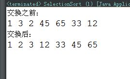

本人免费整理了Java高级资料，涵盖了Java、Redis、MongoDB、MySQL、Zookeeper、Spring Cloud、Dubbo高并发分布式等教程，一共30G，需要自己领取。
传送门：https://mp.weixin.qq.com/s/JzddfH-7yNudmkjT0IRL8Q
a) 原理：每一趟从待排序的记录中选出最小的元素，顺序放在已排好序的序列最后，直到全部记录排序完毕。
也就是：每一趟在n-i+1(i=1，2，…n-1)个记录中选取关键字最小的记录作为有序序列中第i个记录。基于此思想的算法主要有简单选择排序、树型选择排序和堆排序。（这里只介绍常用的简单选择排序）
b) 简单选择排序的基本思想：给定数组：int[] arr={里面n个数据}；第1趟排序，在待排序数据arr[1]~arr[n]中选出最小的数据，将它与arrr[1]交换；第2趟，在待排序数据arr[2]~arr[n]中选出最小的数据，将它与r[2]交换；以此类推，第i趟在待排序数据arr[i]~arr[n]中选出最小的数据，将它与r[i]交换，直到全部排序完成。
c) 举例：数组 int[] arr={5,2,8,4,9,1};
-------------------------------------------------------
第一趟排序： 原始数据：5 2 8 4 9 1
最小数据1，把1放在首位，也就是1和5互换位置，
排序结果：1 2 8 4 9 5
-------------------------------------------------------
第二趟排序： 第1以外的数据{2 8 4 9 5}进行比较，2最小，
排序结果：1 2 8 4 9 5
-------------------------------------------------------
第三趟排序： 除1、2以外的数据{8 4 9 5}进行比较，4最小，8和4交换
排序结果：1 2 4 8 9 5
-------------------------------------------------------
第四趟排序： 除第1、2、4以外的其他数据{8 9 5}进行比较，5最小，8和5交换
排序结果：1 2 4 5 9 8
-------------------------------------------------------
第五趟排序： 除第1、2、4、5以外的其他数据{9 8}进行比较，8最小，8和9交换
排序结果：1 2 4 5 8 9
-------------------------------------------------------
注：每一趟排序获得最小数的方法：for循环进行比较，定义一个第三个变量temp，首先前两个数比较，把较小的数放在temp中，然后用temp再去跟剩下的数据比较，如果出现比temp小的数据，就用它代替temp中原有的数据。
具体参照后面的代码示例，相信你在学排序之前已经学过for循环语句了，这样的话，这里理解起来就特别容易了。
代码示例：
//选择排序
public class SelectionSort {
public static void main(String[] args) {
int[] arr={1,3,2,45,65,33,12};
System.out.println("交换之前：");
for(int num:arr){
System.out.print(num+" ");
}
//选择排序的优化
for(int i = 0; i < arr.length - 1; i++) {// 做第i趟排序
int k = i;
for(int j = k + 1; j < arr.length; j++){// 选最小的记录
if(arr[j] < arr[k]){
k = j; //记下目前找到的最小值所在的位置
}
}
//在内层循环结束，也就是找到本轮循环的最小的数以后，再进行交换
if(i != k){ //交换a[i]和a[k]
int temp = arr[i];
arr[i] = arr[k];
arr[k] = temp;
}
}
System.out.println();
System.out.println("交换后：");
for(int num:arr){
System.out.print(num+" ");
}
}
}
运行结果截图：

选择排序的时间复杂度：简单选择排序的比较次数与序列的初始排序无关。
假设待排序的序列有 N 个元素，则比较次数永远都是N (N - 1) / 2。
而移动次数与序列的初始排序有关。
当序列正序时，移动次数最少，为 0。
当序列反序时，移动次数最多，为3N (N - 1) / 2。
所以，综上，简单排序的时间复杂度为 O(N2)。